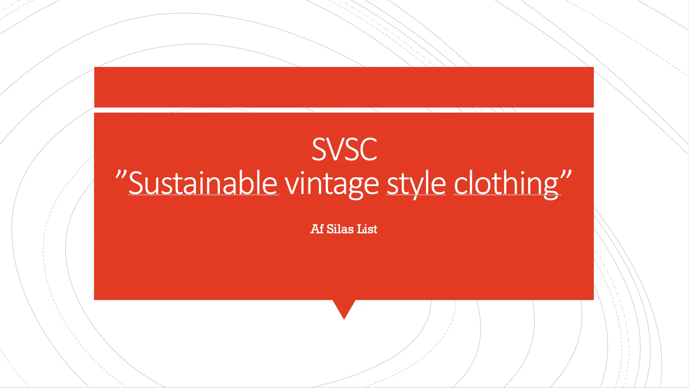

UX Pitch Deck
Grundlæggende UX
Vis UX Pitch DeckI grundlæggende UX arbejdede vi med at skulle pitche til en kunde. Vi arbejde med pitchstruktur som består af tre dele UX-research, UX/UI-design og UX-test.

I grundlæggende UX arbejdede vi med at skulle pitche til en kunde. Vi arbejde med pitchstruktur som består af tre dele UX-research, UX/UI-design og UX-test.